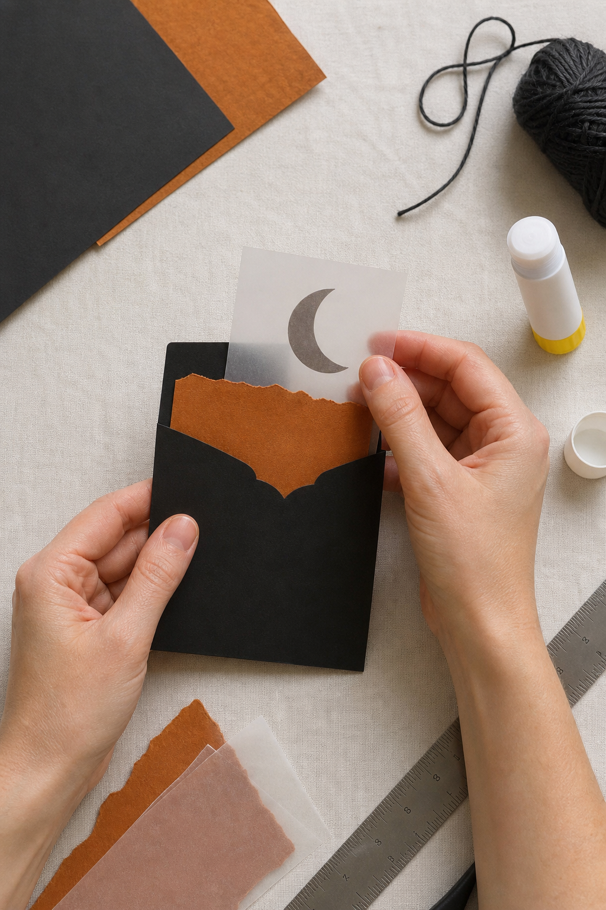

A Halloween page does not need a crowd of pumpkins, bats, and labels. One dark pocket and one translucent moon can create the whole mood while leaving useful space for a note, photograph, or October memory.

Choose a quiet three-color foundation
Begin with matte black, burnt orange, and cloudy white vellum. The black creates depth, the orange supplies warmth, and the vellum softens the contrast. If you want a fourth material, add only a little aged cream for writing.
Build the pocket before decorating it
Cut a rectangle of black paper slightly narrower than the journal page. Fold a narrow flap along the bottom and both sides, trim away the bulky corners, and glue only those three flaps. Leave the top open. A shallow curved notch makes the contents easier to remove, but a straight edge looks beautifully severe.
Tear the orange layer
Tear a strip of burnt orange paper and tuck it behind the pocket opening so that only an uneven band shows. Its rough edge should interrupt the clean black shape. This small contrast is enough to suggest autumn leaves and firelight without adding literal motifs.

Add the vellum moon
Trace a circle on vellum, then overlap a second circle and cut away the center to form a crescent. Attach it with a tiny amount of clear-drying glue beneath the widest part, or use two small stitches. Avoid coating the whole moon with glue; vellum often wrinkles and shows adhesive marks.
Make one removable card
Cut a cream card that rises about an inch above the pocket. Add a date, a sentence about the evening, or a copied line from an invitation. A black thread loop or narrow paper tab makes the card feel intentional and prevents it from disappearing into the pocket.
Balance the rest of the spread
Leave the facing page lighter. A pencil note, a faint branch stamp, or three tiny ink dots will echo the decorated pocket without competing with it. If the spread feels empty, resist adding another large image; instead, repeat the orange once in a very small scrap near the opposite corner.
Keep it useful after Halloween
The pocket can hold a costume snapshot, a sweet wrapper, a ticket, a child’s drawing, or a list of films watched during October. When a decorative element also protects a real memory, it becomes part of the journal rather than seasonal surface decoration.
Close the journal and check for bulk before the glue fully sets. The best Halloween pockets feel secretive, not heavy: one shadow, one warm edge, and a moon that catches the light when the page turns.
Image note: Some visuals in this article were created with AI and curated by Sentimentalica.